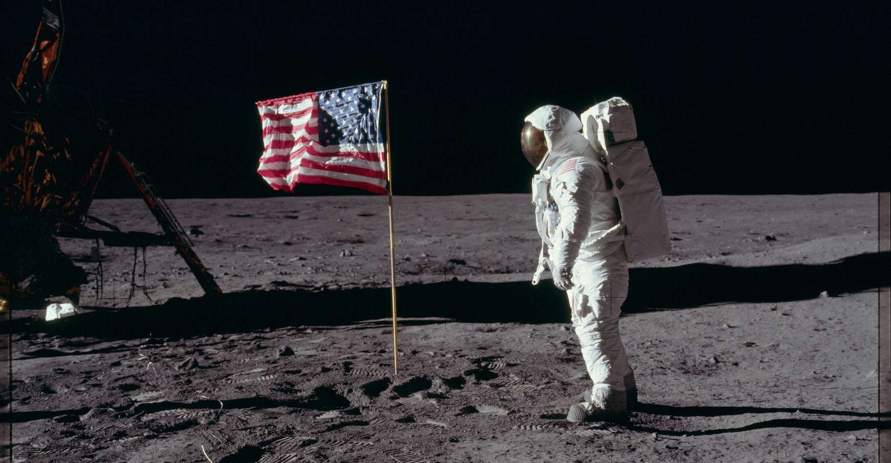

Section Espace
L'homme sur la Lune
Cette page contient: 12 chapitres

Chapitre 1 : L'Origine du Rêve Lunaire
Depuis des millénaires, la Lune a fasciné l'humanité. Les anciens peuples la considéraient comme une divinité ou un guide nocturne, ses phases régulant le temps et les saisons. Avec l'avènement de la science moderne, la Lune devint un objet d'étude, révélant peu à peu ses mystères. Mais c'est au XXe siècle que l'idée de marcher sur la Lune passa du rêve à une possibilité concrète, alimentée par les avancées technologiques et la rivalité géopolitique de la Guerre froide.
Chapitre 2 : La Course à l'Espace
La compétition pour la suprématie spatiale entre les États-Unis et l'Union soviétique atteignit son paroxysme avec le lancement de Spoutnik 1 en 1957 par les Soviétiques. En réponse, les États-Unis accélérèrent leurs propres efforts, menant au lancement d'Explorer 1 en 1958 et à la création de la NASA la même année. Chaque succès soviétique, comme le vol de Youri Gagarine en 1961, incita les Américains à redoubler d'efforts pour ne pas se laisser distancer.
Chapitre 3 : L'Appel à la Nation
Le 25 mai 1961, le président John F. Kennedy prononça un discours devant le Congrès américain, appelant la nation à poser un homme sur la Lune et à le ramener sain et sauf sur Terre avant la fin de la décennie. Cet appel audacieux galvanisa la nation et marqua le début du programme Apollo, une entreprise ambitieuse qui mobilisa des ressources humaines et financières sans précédent.
Chapitre 4 : Les Préparatifs du Programme Apollo
La NASA entreprit une série de missions préparatoires cruciales pour assurer le succès du programme Apollo. Les missions Mercury et Gemini permirent de tester les techniques de rendez-vous spatial, de sortie extravéhiculaire et de longue durée dans l'espace. Parallèlement, des équipes d'ingénieurs et de scientifiques travaillaient d'arrache-pied pour développer les technologies nécessaires, notamment le module de commande et de service, le module lunaire et la fusée Saturn V.
Chapitre 5 : Les Premières Missions Apollo
Le programme Apollo démarra véritablement avec Apollo 1, mais cette mission fut tragiquement marquée par un incendie au sol qui coûta la vie aux trois astronautes à bord. Cet événement entraîna une refonte complète des procédures de sécurité. Les missions Apollo 7, 8, 9 et 10 suivirent, chacune apportant des connaissances essentielles et testant des composants critiques pour le vol lunaire.
Chapitre 6 : Apollo 11 : Le Grand Saut
Le 16 juillet 1969, Apollo 11 décolla du Centre spatial Kennedy en Floride. À bord, Neil Armstrong, Buzz Aldrin et Michael Collins entamèrent un voyage historique vers la Lune. Après un voyage de trois jours, Apollo 11 entra en orbite lunaire. Armstrong et Aldrin descendirent à bord du module lunaire "Eagle", tandis que Collins resta en orbite dans le module de commande "Columbia".
Chapitre 7 : Les Premiers Pas sur la Lune
Le 20 juillet 1969, à 20h17 UTC, le module lunaire "Eagle" se posa sur la Mer de la Tranquillité. Quelques heures plus tard, Neil Armstrong descendit l'échelle et posa le pied sur la Lune, prononçant la célèbre phrase : "C'est un petit pas pour l'homme, un bond de géant pour l'humanité." Buzz Aldrin le rejoignit peu après, et ensemble, ils plantèrent le drapeau américain, collectèrent des échantillons de roche et menèrent des expériences scientifiques.
Chapitre 8 : Le Retour Triomphal
Après 21 heures et 36 minutes sur la surface lunaire, Armstrong et Aldrin remontèrent à bord du module lunaire, rejoignant Collins dans le module de commande. Le 24 juillet 1969, Apollo 11 amerrit dans l'océan Pacifique, marquant la fin d'une mission couronnée de succès et le début d'une nouvelle ère pour l'exploration spatiale.
Chapitre 9 : Les Réactions Mondiales
L'atterrissage sur la Lune fut suivi avec une attention fiévreuse par des millions de personnes à travers le monde. Les images diffusées en direct capturèrent l'imagination de tous, unissant temporairement l'humanité dans un moment de fierté et de triomphe partagés. Les dirigeants mondiaux félicitèrent les États-Unis pour cet exploit monumental, et les astronautes furent célébrés en héros à leur retour sur Terre.
Chapitre 10 : Les Missions Apollo Suivantes
Le programme Apollo ne s'arrêta pas à Apollo 11. Entre 1969 et 1972, cinq autres missions habitées atteignirent la Lune. Chaque mission apporta de nouvelles découvertes scientifiques et repoussa les limites de l'exploration humaine. Les astronautes parcoururent de plus grandes distances, conduisant le rover lunaire et déployant des instruments scientifiques sophistiqués.
Chapitre 11 : L'Héritage du Programme Apollo
Le programme Apollo laissa un héritage durable non seulement en termes de connaissances scientifiques mais aussi en inspirant des générations de scientifiques, d'ingénieurs et d'explorateurs. Les technologies développées pour les missions Apollo trouvèrent des applications dans divers domaines, de la médecine aux matériaux, en passant par l'informatique. Apollo démontra également la capacité de l'humanité à surmonter des défis monumentaux grâce à l'innovation, la collaboration et la détermination.
Chapitre 12 : Le Futur de l'Exploration Spatiale
L'héritage d'Apollo se poursuit alors que l'humanité regarde vers de nouvelles frontières. Les missions vers Mars, les projets de bases lunaires permanentes et les explorations des astéroïdes sont autant de défis inspirés par les premiers pas sur la Lune. La coopération internationale et les avancées technologiques ouvrent la voie à une nouvelle ère d'exploration où l'espace devient une partie intégrante du futur de l'humanité.
Conclusion
Le programme Apollo reste un témoignage de ce que l'humanité peut accomplir lorsqu'elle est unie par un objectif commun. Les premiers pas sur la Lune sont gravés dans l'histoire comme l'un des plus grands exploits de l'ingéniosité humaine. En revisitant cette épopée, nous nous rappelons de la puissance de nos rêves et de notre capacité à réaliser l'impossible. Alors que nous continuons à explorer et à découvrir, l'esprit d'Apollo continue de nous inspirer à atteindre les étoiles.i